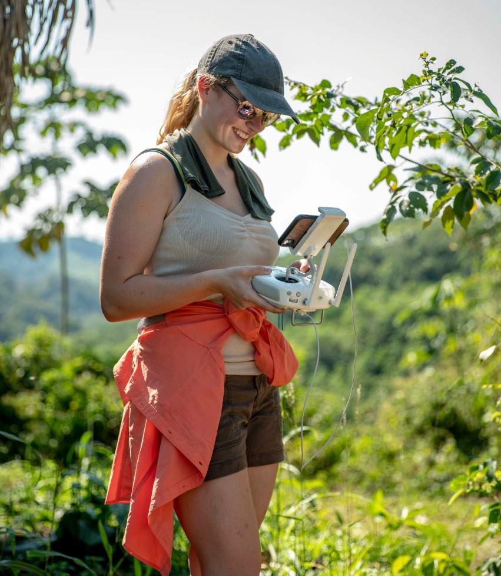

about me
Hi! My name is McClain Martensen. I am an aspiring designer, map maker, and engineer from Dallas, Texas. I am currently pursuing my B.S. at the University of Colorado Boulder in Creative Technology and Design, as well as a minor in Geography and a certificate in Geographic Information Systems (GIS). Over the past few years, I’ve delved into a series of mediums and concentrations within the realm of GIS, design, web development, and data analysis. I am currently working for National Geographic’s Map Maker team writing descriptions and developing layers for their interactive map collection. Along with this, I’ve collaborated with National Geographic’s Boiling River Project over the past five years as their lead GIS consultant and drone pilot. Over the summers of 2018 and 2019, I travelled to the Peruvian Amazon to create high resolution orthomosaic maps of a curiously located geothermal river using Phantom 3/4 and Mavic 2 Pro drones. Whilst experimenting with infrared drone camera attachments and photogrammetric software, I developed a love for aesthetics and design. Lately, I’ve been developing my web, type, and graphic design skills with the intention to eventually combine these new abilities with my passion for map making and the environment. In my free time I love to ski, meditate, stay active, watch movies, and enjoy the outdoors.
